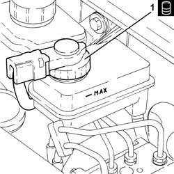
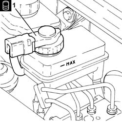

0010T62 brake and or clutch fluid check level and top up as necessary
- Path
- Procedures > 00 MAINTENANCE > 0010 NEW UNITS AND PLANNED MAINTENANCE'. > 0010T vehicle oil and fluids > 0010T62 brake and or clutch fluid check level and top up as necessary
- Kind
- repair procedure (removal / refitting; the operation number is the code)
- Applies to
- engines: 2.0 JTS, 3.2 V6, 1.9 JTD 16v, 2.0 JTS, 2.4 JTD 20v; all production periods
- Interactive page
- https://sloeber94.github.io/elrnDB-a156/en/#/3237415
Applies to: engines: 3.2 V6; all production periods
Proceed with 3330A10 BRAKE FLUID - Check level and top up, if necessary. .
Applies to: engines: 2.0 JTS, 2.0 JTS; all production periods
Proceed with 3330A10 BRAKE FLUID - Check level and top up, if necessary. .
Applies to: engines: 1.9 JTD 16v; all production periods
Proceed with removal 1016A10 sound-proofing cover - r + r .
1. Unscrew the cap and check that the fluid in the reservoir is at the maximum level; if not, top up with the recommended fluid.
 | Type | Component | Name | Qty. |
|---|---|---|---|---|
1 | Fluid | BRAKE-CLUTCH HYDRAULIC SYSTEMS | TUTELA CAR TOP 4 FOR ALFA ROMEO | 0.525 |

Applies to: engines: 1.9 JTD 16v; all production periods
Proceed with refitting 1016A10 sound-proofing cover - r + r .
Applies to: engines: 2.4 JTD 20v; all production periods
1. Unscrew the cap and check that the fluid in the reservoir is at the maximum level; if not, top up with the recommended fluid.
| Type | Component | Name | Qty. |
|---|---|---|---|---|
1 | Fluid | BRAKE-CLUTCH HYDRAULIC SYSTEMS | TUTELA CAR TOP 4 FOR ALFA ROMEO | 0.525 |
